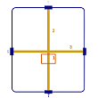
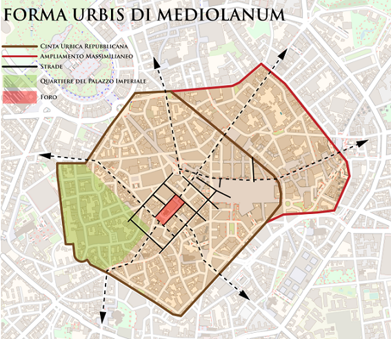

CITY MAPS
Middle Ages
CITY MAPS IN THE MIDDLE AGES
Milan is a city of walls.
The works of archaeologists help us to recreate the appearance of Milan in ancient times.
The walls were of three types: Roman, Medieval and Spanish.
Today we will see the Medieval and Spanish walls.
ROMAN WALLS (II-III)
Milan is a city of Roman foundation: when the Romans arrived in a territory, they built a castrum, the camp where the Roman army resided, permanently or temporarily, giving life to a new city.
The Romans were very good technicians. The urban plan adopted in the construction of the city is characterized by the orthogonal meeting of the streets, cardo (from north to south) and decumanus (from east to west), which divide the city into quadrangular blocks.
At the center of the city sits the Forum, the military and political center of the city, for Milan it is Piazzetta San Sepolcro.
In the 11th-12th century Milan was razed to the ground by Federico Barbarossa and a new wall was built: the Medieval Wall.
MEDIEVAL WALLS (XII)
The new walls were built of stone and there was a deep moat with some towers and 6 gates.
It had a star structure and in the center there was the religious power where there was Milan Cathedral, the most important cathedral.
The houses were close together and the streets were narrow and allowed the passage of one person at a time to ensure a better control of the city.
This belt was almost circular and was surrounded by the circle of the Navigli.
In this period the countryside developed, which allowed the supply of the city, it was not inside but outside.
SPANISH WALLS (XVI)
At this time Lombardy was dominated by the Spanish.
The medieval walls were strengthened, which became thicker and stronger for a better defense, as new weapons were used during the attacks.
These walls allowed the passage of more soldiers at a time, these walls are called Bastions; next to them were built the pusterle, secondary access roads that allowed the passage of people, and 12 doors.
In the middle of 700 the Spanish walls were no longer useful and therefore were demolished.